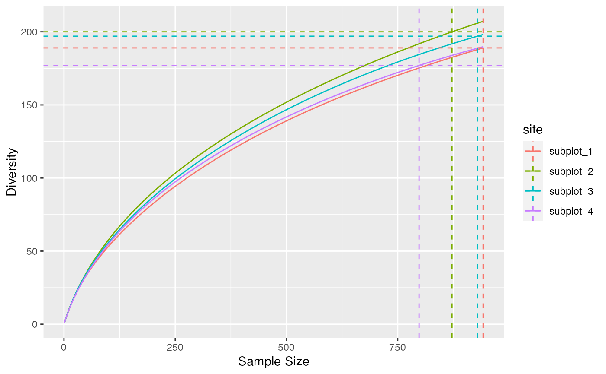

Diversity and Entropy Accumulation Curves represent the accumulation of entropy with respect to the sample size.
ent_accum(x, ...)
# S3 method for numeric
ent_accum(
x,
q = 0,
levels = seq_len(sum(x)),
probability_estimator = c("Chao2015", "Chao2013", "ChaoShen", "naive"),
unveiling = c("geometric", "uniform", "none"),
richness_estimator = c("rarefy", "jackknife", "iChao1", "Chao1", "naive"),
jack_alpha = 0.05,
jack_max = 10,
coverage_estimator = c("ZhangHuang", "Chao", "Turing", "Good"),
n_simulations = 0,
alpha = 0.05,
show_progress = TRUE,
...,
check_arguments = TRUE
)
# S3 method for abundances
ent_accum(
x,
q = 0,
levels = NULL,
probability_estimator = c("Chao2015", "Chao2013", "ChaoShen", "naive"),
unveiling = c("geometric", "uniform", "none"),
richness_estimator = c("rarefy", "jackknife", "iChao1", "Chao1", "naive"),
jack_alpha = 0.05,
jack_max = 10,
coverage_estimator = c("ZhangHuang", "Chao", "Turing", "Good"),
n_simulations = 0,
alpha = 0.05,
show_progress = TRUE,
...,
check_arguments = TRUE
)
div_accum(x, ...)
# S3 method for numeric
div_accum(
x,
q = 0,
levels = seq_len(sum(x)),
probability_estimator = c("Chao2015", "Chao2013", "ChaoShen", "naive"),
unveiling = c("geometric", "uniform", "none"),
richness_estimator = c("rarefy", "jackknife", "iChao1", "Chao1", "naive"),
jack_alpha = 0.05,
jack_max = 10,
n_simulations = 0,
alpha = 0.05,
show_progress = TRUE,
...,
check_arguments = TRUE
)
# S3 method for abundances
div_accum(
x,
q = 0,
levels = NULL,
probability_estimator = c("Chao2015", "Chao2013", "ChaoShen", "naive"),
unveiling = c("geometric", "uniform", "none"),
richness_estimator = c("rarefy", "jackknife", "iChao1", "Chao1", "naive"),
jack_alpha = 0.05,
jack_max = 10,
n_simulations = 0,
alpha = 0.05,
show_progress = TRUE,
...,
check_arguments = TRUE
)
# S3 method for accumulation
autoplot(
object,
...,
main = NULL,
xlab = "Sample Size",
ylab = NULL,
shade_color = "grey75",
alpha = 0.3,
lty = ggplot2::GeomLine$default_aes$linetype,
lwd = ggplot2::GeomLine$default_aes$linewidth
)An object, that may be a numeric vector containing abundances or probabilities, or an object of class abundances or probabilities.
Unused.
The order of diversity.
The levels, i.e. the sample sizes of interpolation or extrapolation: a vector of integer values.
A string containing one of the possible estimators of the probability distribution (see probabilities). Used only for extrapolation.
A string containing one of the possible unveiling methods to estimate the probabilities of the unobserved species (see probabilities). Used only for extrapolation.
An estimator of richness to evaluate the total number of species, see div_richness. Used for interpolation and extrapolation.
The risk level, 5% by default, used to optimize the jackknife order.
The highest jackknife order allowed. Default is 10.
An estimator of sample coverage used by coverage.
The number of simulations used to estimate the confidence envelope.
The opacity of the confidence envelopes, between 0 (transparent) and 1 (opaque).
If TRUE, a progress bar is shown during long computations.
If TRUE, the function arguments are verified.
Should be set to FALSE to save time when the arguments have been checked elsewhere.
An object of class "accumulation".
The main title of the plot.
The label of the x-axis.
The label of the y-axis.
The color of the shaded confidence envelopes.
The line type of the curves.
The line width of the curves.
A tibble with the site names, the estimators used and the accumulated entropy or diversity at each level of sampling effort.
div_accum() or ent_accum() estimate the diversity or entropy accumulation
curve of a distribution.
See ent_tsallis for details about the computation of entropy at each level
of interpolation and extrapolation.
In accumulation curves, extrapolation if done by estimating the asymptotic distribution of the community and estimating entropy at different levels by interpolation.
Interpolation and extrapolation of integer orders of diversity are from Chao et al. (2014) . The asymptotic richness is adjusted so that the extrapolated part of the accumulation joins the observed value at the sample size.
"accumulation" objects can be plotted. They generalize the classical Species Accumulation Curves (SAC) which are diversity accumulation of order $q=0$.
Chao A, Gotelli NJ, Hsieh TC, Sander EL, Ma KH, Colwell RK, Ellison AM (2014). “Rarefaction and Extrapolation with Hill Numbers: A Framework for Sampling and Estimation in Species Diversity Studies.” Ecological Monographs, 84(1), 45--67. doi:10.1890/13-0133.1 .
autoplot(div_accum(paracou_6_abd))
#>
#>
#>
#>
